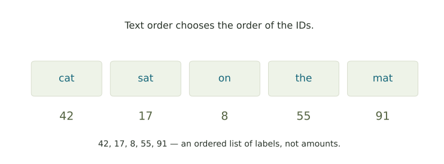
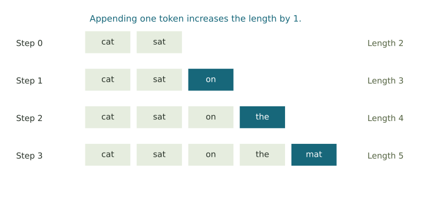

How text becomes a number sequence
Use a toy vocabulary to distinguish integer labels, sequence order, and the count of appended tokens.
Token IDs and text
Just as a bus route has a number, a token has an ID. A token ID plays a similar role in a language model: it identifies a particular piece of text.
A token may be a word, part of a word, or punctuation. A tokenizer splits text into the pieces used by that model and looks up their integer labels. Here we use a tiny invented vocabulary, listed in ID order.
| Token ID | Token |
|---|---|
| 8 | on |
| 17 | sat |
| 42 | cat |
| 55 | the |
| 91 | mat |
| 103 | slept |

A model uses each ID to look up a numerical representation of the token. The size of the ID carries no information about the token's meaning.
Look up a sequence of IDs
Try the example, then reverse its order or replace 42 with 103. Every ID must appear in this table.
Counting tokens as a sequence grows
Suppose a prompt starts with 4 tokens and one new token is appended at each step. Its lengths are 4, 5, 6, 7, … .
L is the number of tokens, and n counts how many have been appended.

A language model chooses a token from the current text, appends it, and repeats the process with the longer sequence. This example keeps all the appended tokens in view.
1. Decode a phrase
2. Count the enlarged sequence
3. Describe the length at any step
4. Interpret an ID
What comes next
The ID sequence is an ordered list of integers. Next week, the probability application asks how several next-token choices can receive different probabilities. For more practice now, use the toy tokenizer and continuation table.
Further reading: Hugging Face’s tokenizer documentation describes splitting text, converting pieces to IDs, and converting them back.